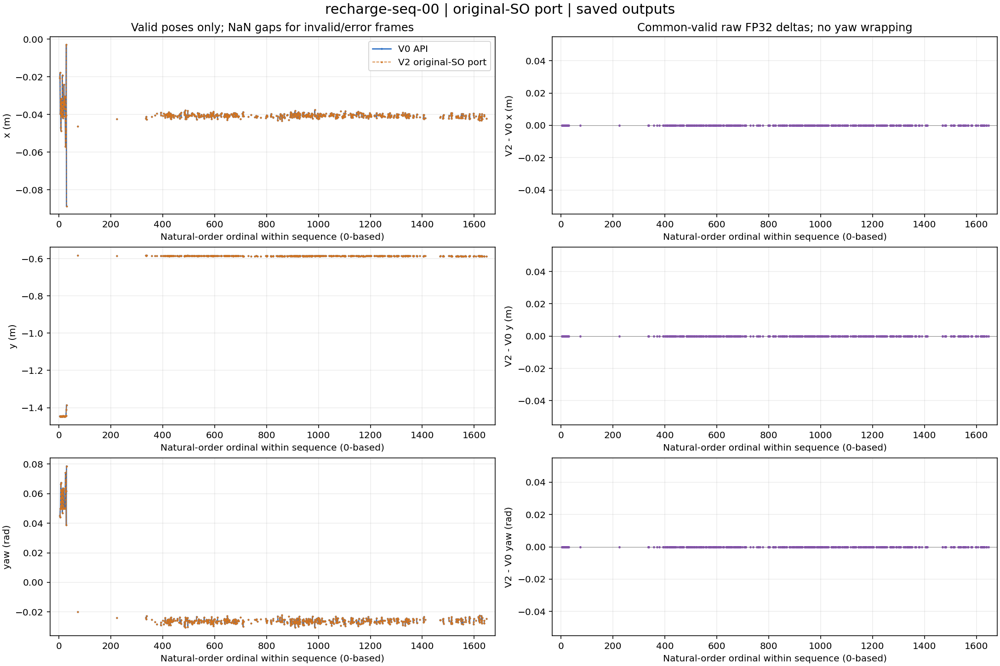
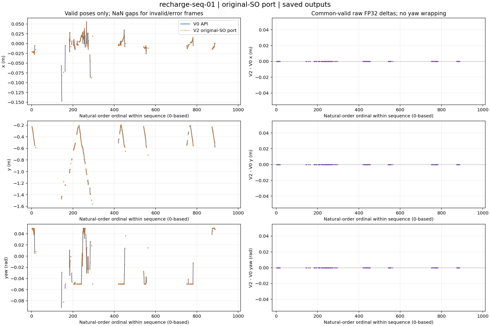
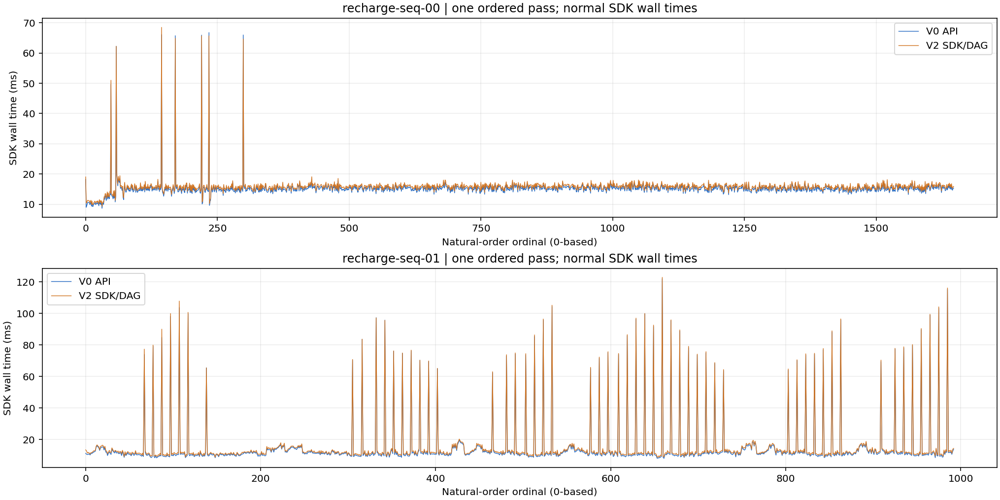

2026-11-07 · X5离线 · 2641张 × 2版 · 原so移植，未做优化
V2回充移植原SDK：x、y、YAW 全量一致性验证
本轮2641张图、原始publish_overlay=false路径的严格一致性验证通过。两版各覆盖2641帧；共同有效729帧中，x/y/yaw三项原始FP32 bit全部相同为729帧。双方正常无效1912帧，其flags一致1912帧、无效raw三轴bit一致1912帧（不计作有效位姿通过）；本批V0/V2 SDK异常分别为0/0帧。
额外路径测试与已知限制
本批默认路径的姿态一致性通过，不等于所有可选路径通过。2641张真实图使用所选ZIP原有的publish_overlay=false；这项原始设置没有因额外实验故障而改动。
额外启用publish_overlay=true的1280×1088合成图契约测试发生SIGSEGV。随后绕过V2、直接调用同一8e458…原SDK，在独立minimal及OpenCV已全局加载两种进程环境中均复现；堆栈进入原库BuildOverlayImage → cv::rectangle。该可选overlay路径故障尚未修复，相关overlay契约不能记为通过。原失败用例及原日志独立保留；默认false路径的正向补验另列结果。
以上是与2641默认路径分开的额外实验。原so保持原字节，本次仅移植、未修补其算法或二进制；应向原SDK提供方取得修正版或完整源码再定位验证。当前结果不能声明全功能、全部配置或长期运行稳定性均通过。正常默认路径的其他契约验证须以各自保存的真实结果为准。
结果与严格判定
Δ=V2−V0。页面数值仅为阅读展示；判定不设容差、不四舍五入、不用yaw角度wrap，不忽略±0。全部原始FP32、hex、flags、差值及异常在逐帧CSV。没有位姿真值，本报告验证版本一致性，不声明真实物理精度。
正常无效帧的原SDK诊断
以下只汇总正常返回、位姿无效时的原 error 文本前缀；不是SDK异常，也不是有真值验证的误检/漏检归因。完整原文逐帧保留，数值门限文字不参与FP32通过判定。
移植边界与实验方法
V2回充改为调用用户选定V0的真实动态库，算法来自原so；未获得完整原版算法源码，本次不声称重写其检测/位姿/滤波算法。仅做与V2任务/数据接口的适配，不实施优化。所选回充原库SHA256为 8e458ce9a48aa8555c2452e09b3edc57baa27fbe44a6db77ddbfc8fc751e9f0b；与完整V2 SDK自身的SHA属于不同文件，不能混淆。
原SDK函数表与旧V2 donor ABI不同，因此适配必须使用原库配套头文件/工厂和正确的结果释放规则。实际运行库、移植源码、Docker构建与依赖证据见下方链接。输入为 /home/st/下载/clean_rgb_jpg/ 全2641张640×480 JPEG，不拉伸。共同JPEG→BGR→I420→UV交织NV12，同步调用后保存原始结果。V2外层借用NV12输入指针并直传原API，没有把本次改动称作新的输入零拷贝优化。
关闭回充时不加载原 librecharge_mark.so；启用回充才进入原库加载/初始化。原库仍有其真实依赖，本次移植不会把它变成无依赖的单文件SDK。运行交付目录仅指按允许清单生成并通过检查的public-runtime，不把完整本地install前缀作为可交付目录。本轮不生成归档交付包。
两原目录按自然数字顺序，各序列/各版本使用新进程；序列内保持原算法状态，不逐帧reset，序列间不串状态。warmup=0表示没有额外预跑，repeat=1表示每张只跑一次；算法内部预热门限仍是原算法的一部分。文件数字和生成的100ms间隔时间仅用于离线路由，不代表真实采集时序。SDK返回时间戳可能按V2外壳路由，位姿一致性独立比较原始FP32。
本轮统一设置 use_hires=false、min_interval_ms=0、run_every_n=1 作为640×480离线比较条件；不把它们说成生产默认GDC1280×1088相机条件，也不为本轮测试修改已同步的原始默认配置/调度策略。
本轮只证明这批640×480离线数据的结果。没有原始1280×1088 GDC、实际相机标定和x/y/yaw真值，不能推广为所有在线相机场景的精度或长期稳定性结论。旧轮未移植V2的失败记录保留在原目录，不与本轮混用。
共同配置与I/O覆盖项以runner保存记录为准；save_result.enabled=false对应原结果图写盘关闭，V0基准本来就通过API关闭该写入。它是共同I/O策略，不是检测/ROI/阈值/滤波调参，也不记作算法优化。
本批使用的 publish_overlay=false 来自所选ZIP的原始配置，并在四组正式数据中保持相同。单独的overlay/高清/生命周期契约测试须独立列出结果，不能用本批姿态一致性替代其他路径验收。
移植源码中三份活跃默认回充配置也已同步原ZIP算法参数；忽略注释文字、保存目录及新增的保存I/O开关后，算法字段和值一致。该项独立检查见证据中的默认配置一致性文件，不仅是本次测试临时使用相同配置。
逐序列位姿与共同有效误差
左图每版仅画有效位姿，数值一致时两条曲线重合；右图仅画共同有效帧的差值。正常无效和SDK异常留空，不补0。两个序列分开，横轴为序列内从0开始的自然顺序编号。数值差为0仍须按原始FP32 bit核验，不能仅凭曲线通过。
recharge-seq-00

recharge-seq-01

本轮SDK调用耗时
本轮回充走原CPU检测、PnP与滤波路径；V2主SDK虽编入BPU能力，本轮recharge-only图未执行DNN，因此下表不是BPU推理时间。
V0：tasks.recharge.api_call_ms 围住原API processLeftNv12；V2：timing.sdk_call_ms 围住完整psdk process，含桥接/DAG和SDK内部工作。两边均排除初始化/动态库加载、外层JPEG读取/解码/NV12转换及外层结果JSON/PNG写盘；SDK内部工作若有仍包含。二者不是完全相同的函数边界。异常帧不填0，另存尝试耗时。
第三类口径是原so结果自带的内部 process_ms：V0取 tasks.recharge.process_ms，V2取 tasks.recharge.details.process_ms，各自列出。这不等于V0原API外侧计时，也不等于V2整次SDK/DAG计时，不能将三种边界混为同一阶段。原始返回值完整保存，缺失时单列为缺失，不补估计。
只统计本轮完整顺序单次回放，未做额外warmup或重复受控实验。这是描述性结果，不把API边界差或系统调度差直接认作算法优化效果，也不是整节点并发/长期压力测试；不能把1/SDK平均耗时当作整机完整系统FPS。

本轮两版未记录SDK异常；这不能代替多轮长时间稳定性测试。
输入图与实际输出留痕
各序列首/中/末共同有效帧、正常无效示例，以及上轮未移植V2出现异常的3张源图。图片为原JPEG字节副本；本轮数值、flags和hex均从本轮保存结果读取，未预设能识别成功。默认0或上一次raw残留均不作为有效位姿一致。
recharge-seq-00-000004
0930/recharge_mark3/result/result_797618.jpg
本机示例图both_valid_exact；原图及全部raw字段见证据。
recharge-seq-00-000924
0930/recharge_mark3/result/result_800378.jpg
本机示例图both_valid_exact；原图及全部raw字段见证据。
recharge-seq-00-001647
0930/recharge_mark3/result/result_802547.jpg
本机示例图both_valid_exact；原图及全部raw字段见证据。
recharge-seq-00-000000
0930/recharge_mark3/result/result_796425.jpg
本机示例图both_normal_invalid；原图及全部raw字段见证据。
recharge-seq-01-000002
P1-743/recharge_mark/result/result_169.jpg
本机示例图both_valid_exact；原图及全部raw字段见证据。
recharge-seq-01-000283
P1-743/recharge_mark/result/result_2612.jpg
本机示例图both_valid_exact；原图及全部raw字段见证据。
recharge-seq-01-000887
P1-743/recharge_mark/result/result_13704.jpg
本机示例图both_valid_exact；原图及全部raw字段见证据。
recharge-seq-01-000000
P1-743/recharge_mark/result/result_167.jpg
本机示例图both_normal_invalid；原图及全部raw字段见证据。
recharge-seq-00-001131
0930/recharge_mark3/result/result_800999.jpg
上轮未移植V2的异常源图；本轮 V0 原API：正常返回/有效；V2 移植后：正常返回/有效。正常返回不等于识别成功。
本机示例图both_valid_exact；原图及全部raw字段见证据。
recharge-seq-01-000980
P1-743/recharge_mark/result/result_13807.jpg
上轮未移植V2的异常源图；本轮 V0 原API：正常返回/无效；V2 移植后：正常返回/无效。正常返回不等于识别成功。
本机示例图both_normal_invalid；原图及全部raw字段见证据。
recharge-seq-01-000984
P1-743/recharge_mark/result/result_13811.jpg
上轮未移植V2的异常源图；本轮 V0 原API：正常返回/无效；V2 移植后：正常返回/无效。正常返回不等于识别成功。
本机示例图both_normal_invalid；原图及全部raw字段见证据。
原始结果和复核证据
本轮原始运行记录
后续优化建议（本次未实施）
以下仅为建议，未改变本轮so/算法；任何影响图像像素、候选排序、浮点计算或状态更新的优化，都必须重新通过同一逐bit门槛，不能只比较显示小数。